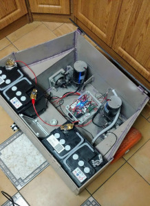

Robot utrzymujący czystość w hodowlach bydła
 Celem projektu było zbudowanie robota czyszczącego powierzchnię obory z zalegających odchodów. Byłem odpowiedzialny za zaprojektowanie struktury i napisanie programu umożliwiającego odczyt informacji z czujników oraz podejmowanie decyzji o dalszych ruchach na ich podstawie.
Robot porusza się autonomicznie po obszarze roboczym na podstawie wcześniej przygotowanej mapy. Po
każdym cyklu pracy robot powraca do stacji dokującej gdzie następuje ładowanie.
Stworzony przeze mnie program ma prostą strukturę, każdy czujnik obsługiwany jest przez osobny wątek, wszystkie odczytane informacje znajdują się we wspólnym obszarze pamięci, główny wątek programu odczytuje je, gdy następuje taka potrzeba i uwzględniając informacje z uprzednio przygotowanej mapy podejmuje decyzje o dalszych ruchach robota. Do poprawy jakości odczytu z IMU użyłem implementacji filtra Kalmana.
Filmy ukazują testy działania silników.
Użyty sprzęt i technologie
- Python 3.7
- Raspberry Pi 3 Model B+
- Komunikacja z czujnikami odległości, enkoderami, IMU odbywa się poprzez UART i I2C
- © Untitled
- Design: HTML5 UP